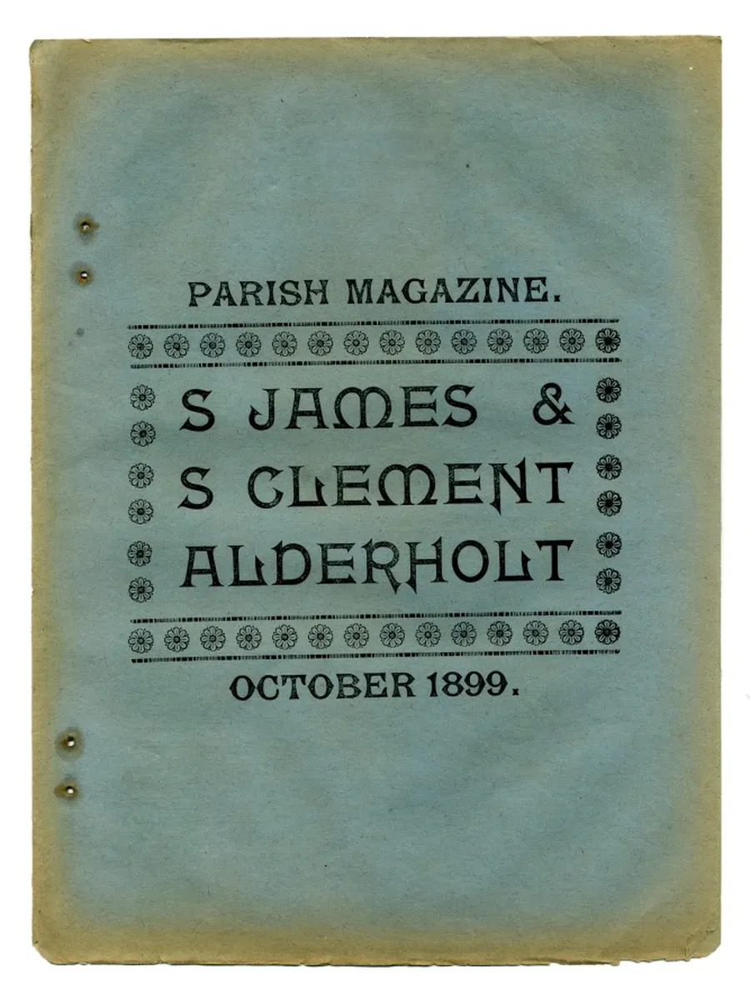
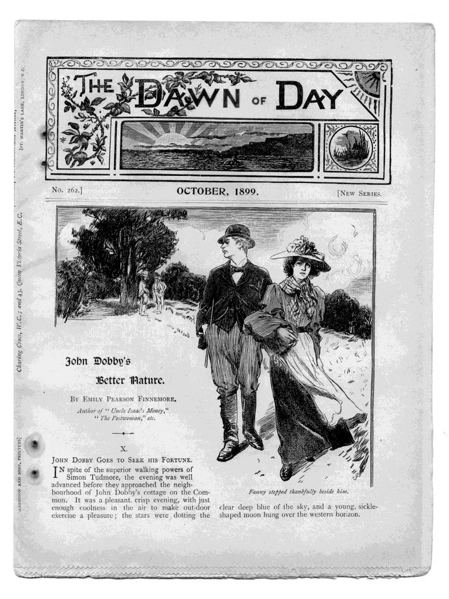
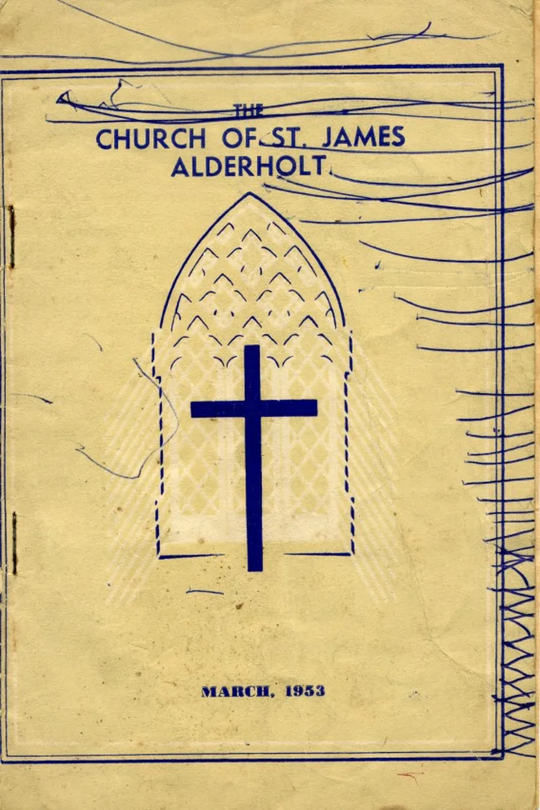
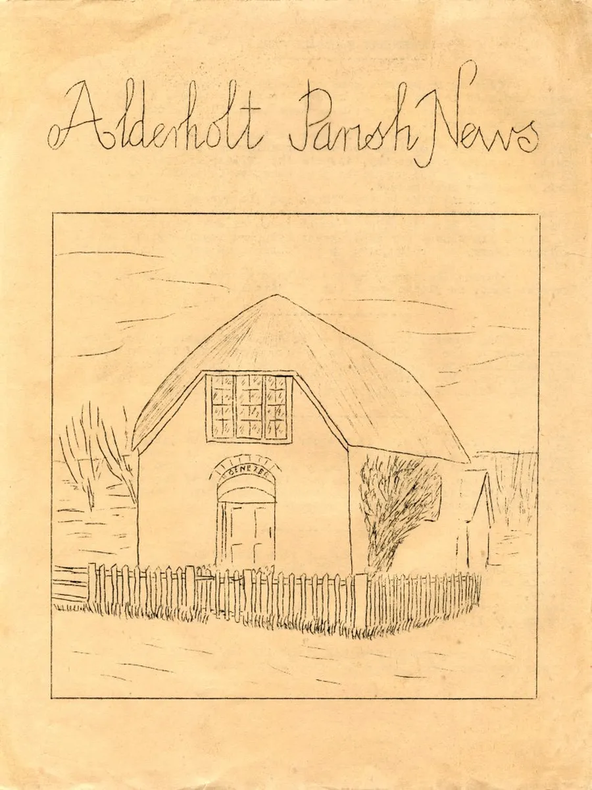
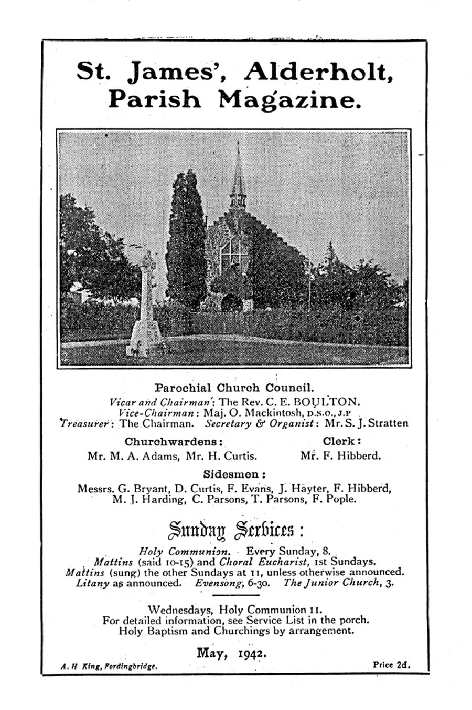
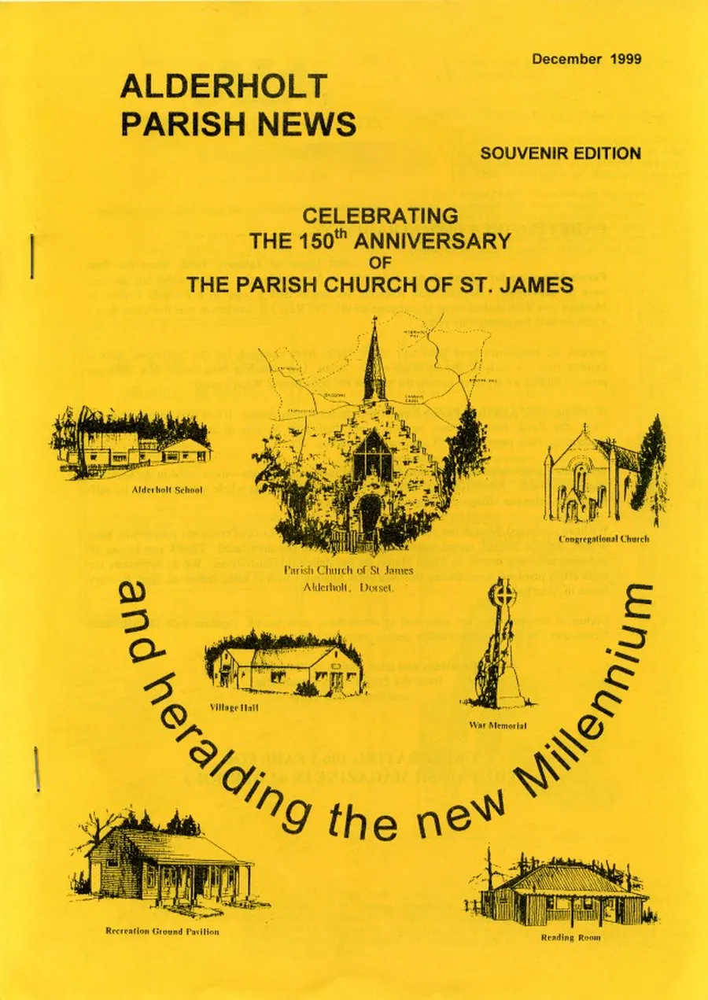
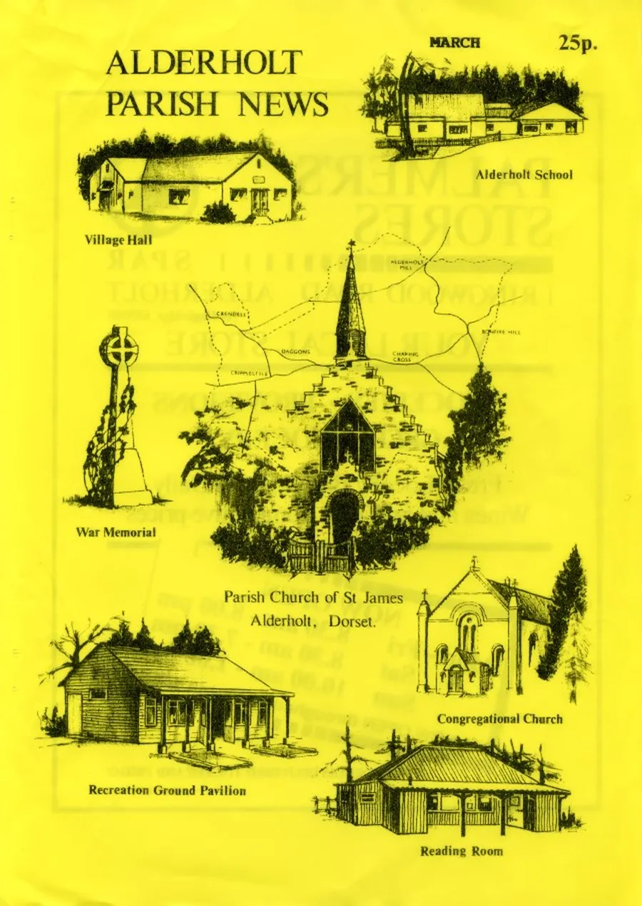
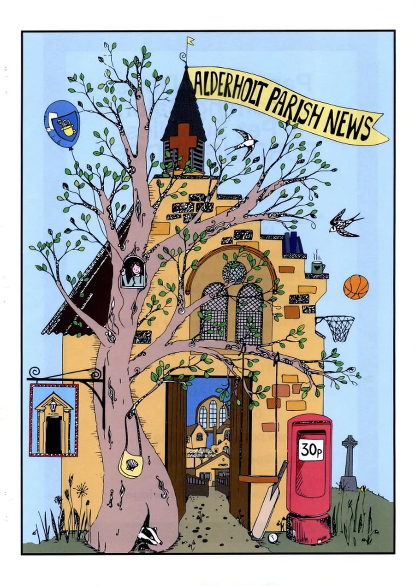
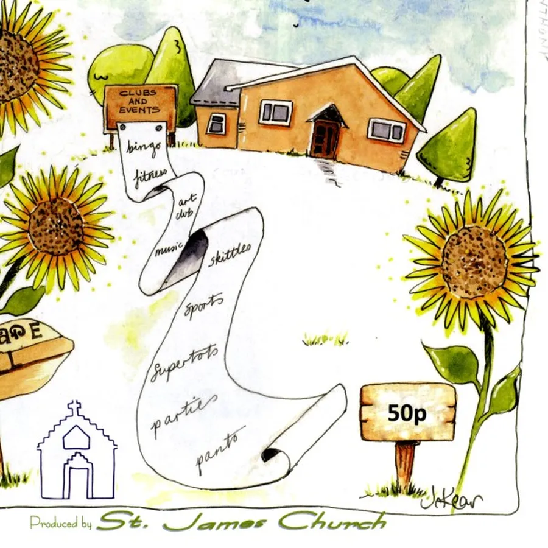

Alderholt Parish News
by Adrian King

Jean Mortimer wrote in April 2017
“THE PARISH NEWS
The next phase begins with this April edition, which is the last one to be printed and collated in the ‘Print Room’ at the Church Hall.”

A Parish Magazine for Alderholt had been started by St. James’ Church in January 1893. Eighty-two subscribers received the small printed booklet which contained a general publication for the Church of England with one additional page for the Vicar’s letter. It was started by Rev. J. R. Sanderson.
By 1939 it had grown to four pages and was being professionally printed by A. H. King in Fordingbridge. It incorporated about fifteen small advertisements from local tradespeople and sold for tuppence, two old pennies. It still had a general publication from the Church of England in the centre.
In 1957 Alderholt Parish News replaced the former design. The new magazine had about six end-stapled double-sided quarto pages and cost 3d. Fifteen advertisements were placed on the back page with seven from within the village.

The Vicar Revd. John Rumens was Editor and printing was done by him at the The Grange Vicarage using a hand-turned duplicating machine.
The editorial team began to feature reports from local organizations such as sports teams, the Cubs and Scouts, the Alderholt Young Wives and the Ladies Social Club. Local chapels like Cripplestyle Congregational Church were invited to contribute to the magazine. It continued like this for several decades.
Jean Mortimer who was the editor for forty years says
“Thanks to countless volunteers who have given freely of their time and energy the magazine continued to thrive and be financially viable. We invested in up-to-date machinery in the mid 1990’s and the mechanical typewriters, flimsy stencils and ink spillage became things of the past.”

It was being produced by the tireless efforts of a 30-strong team of volunteers who typed, printed, stapled and delivered up to 500 copies monthly.
Jean continued
“Now we have reached the next step. The Parochial Church Council at its March 2017 meeting voted to out-source the printing and collating to a professional printer. This of course will make a difference to our costs. In due course there will be an increase in the price to 50p per copy and slight increases in advertising charges.
Looking back at old copies is just like delving into a history book. The people, the places, the activities written about chart in a small way life in Alderholt.”
Many of the old copies of the parish news have been placed in the Dorset History Centre.
In December 1999 there was a Souvenir Edition, Celebrating the 150th Anniversary of the Parish Church of St. James and heralding the new Millennium. This was delivered free to the village.
There have been various cover designs over the years but since 2017 with the outsourcing of printing colour has been used. Recently there have been a series of colourful designs being different for each month painted by Jo Kear.

Previously the designs mostly featured St. James Church and notable places of interest in the parish. In 2020 the booklet style changed from end stapled A4 sheets to A3 folded centre stapled.
During the Coronavirus pandemic of 2020 the April and May magazines were posted online instead of being physically distributed.
Pam Reynolds produced a special edition in June 2022 celebrating Queen Elizabeth’s Platinum Jubilee.

Recent Editors.
- Rev. John Rumens 1954 – 1959
- Mr. R. G. Wheable 1960
- Rev. H. R. Hadden. 1965 – 1977
- Jean Mortimer 1977 – 2017
- Claire Botto 2017 – 2018
- Holly Botto 2018 – 2021
- Pam Reynolds 2021 – 2025
- Sarah Crocker 2025 –
The Alderholt Parish News continues from strength to strength.
More covers



